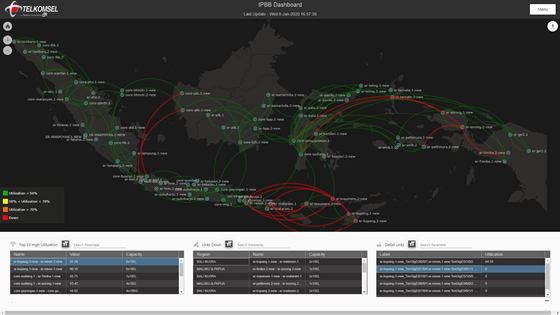

Background
Geospecific Network Information for Spatial Analytic (GeISA) is an integrated web application for reporting, visualizing, and monitoring KPI achievement for Network Directorate in Telkomsel. Current project has been successfully delivering valuable information to support monitoring of Network KPI achievement. Based on further review and evaluation of this application, there are several capabilities that should be embedded to this application.
Objective
GeISA is now used by many entities in Telkomsel, with main Objective such as :
As an integrated web application for reporting, visualizing, and monitoring KPI achievement for network directorate in Telkomsel. There are 5 Main Features on GeISA
Data source of GeISA is consist of 5 important elements such as Network OSS for network traffic, utililzation, and performance, Teradata for revenue, Lacima for BTS coordinates, Planet for BTS beamwidth and azimuth, Bakosurtanal for border map in any geographical levels, and Marketing data for recharge share and sales share. Those whole data are compiled using cron job with ETL process and stored in the database automatically. Finally, all necessary information from database are presented in both map-based application and dashboard one.
